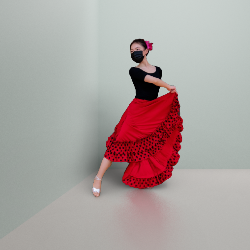
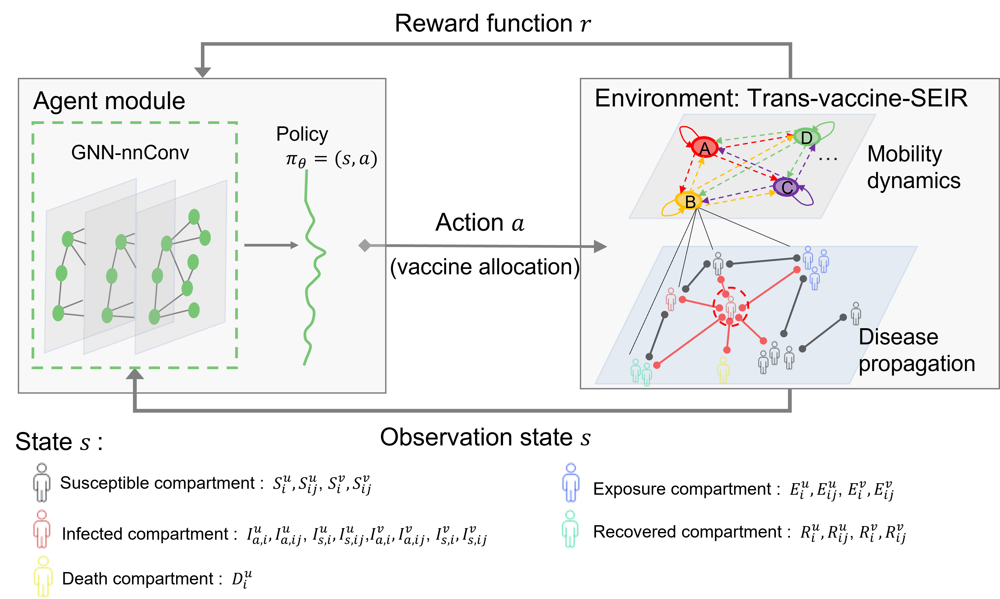
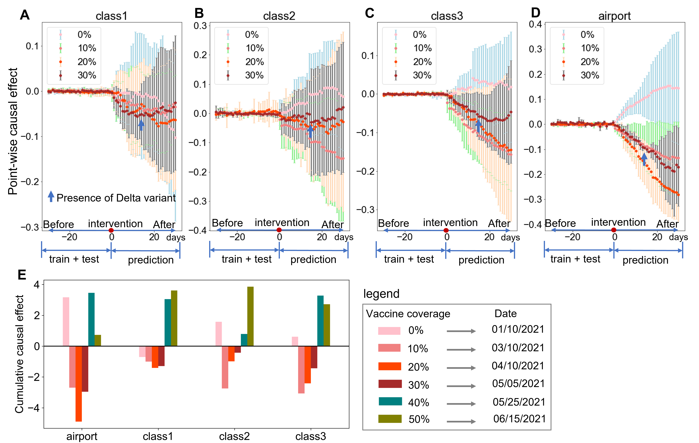
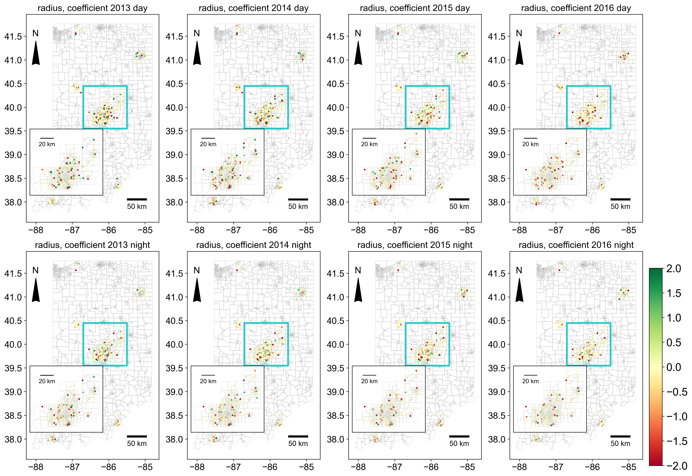
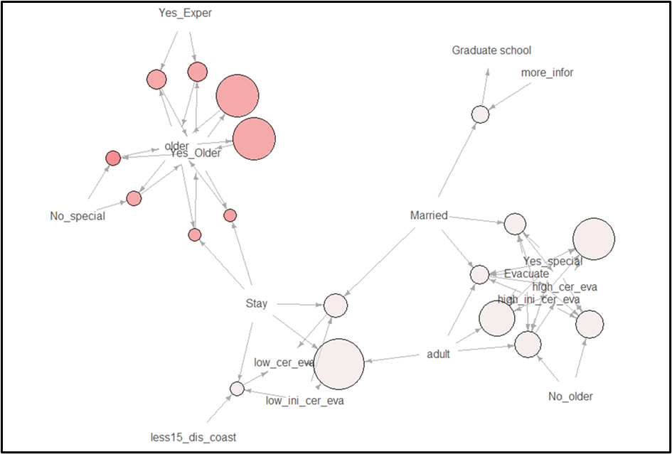
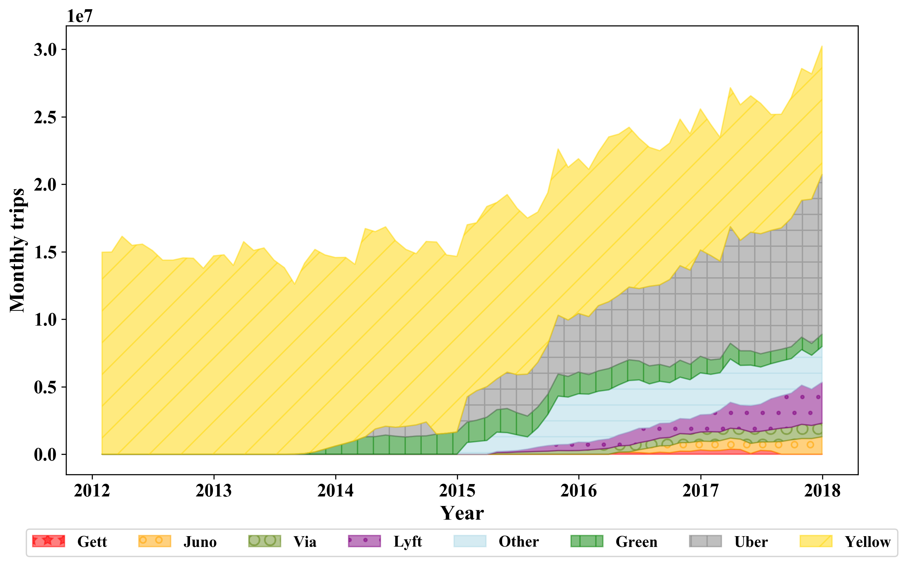
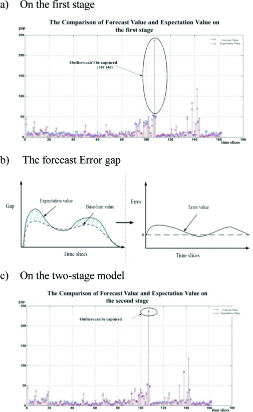
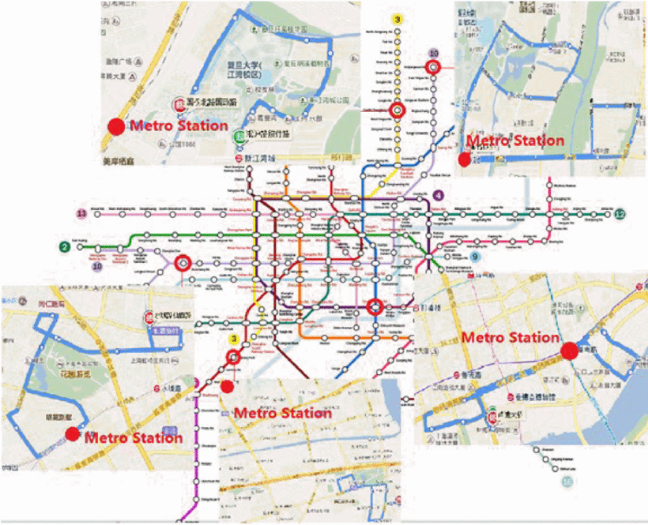

Lu Ling I am Lu Ling, a PhD candidate in the IDEADs Lab at Purdue University, advised by Prof. Aniket Bera.
Email / CV / Google Scholar / LinkedIn / Twitter |
Research |

|
I-Scene: 3D Instance Models are Implicit Generalizable Spatial LearnersLu Ling, Yunhao Ge, Yichen Sheng, Aniket Bera under review Feed-forward interactive 3D scene generation / world models. Strong generalizability and high fidelity for unseen layout and various spatial relations. > proj > paper > code |

|
Scenethesis: A Language and Vision Agentic Framework for 3D Scene GenerationLu Ling, Chen-Hsuan Lin, Tsung-Yi Lin, Yifan Ding, Yu Zeng, Yichen Sheng, Yunhao Ge, Ming-Yu Liu, Aniket Bera, Zhaoshuo Li under review An Agentic Framework for Text-to-3D Scene Generation. The generated scenes are diverse, interactive, realistic, and physically plausible for virtual content creation, editing, simulation, and embodied AI. > proj > paper > code |

|
DL3DV-10K: A Large-Scale Scene Dataset for Deep Learning-based 3D VisionLu Ling, Yichen Sheng, Zhi Tu, Wentian Zhao, Cheng Xin, Kun Wan, Lantao Yu, Qianyu Guo, Zixun Yu, Yawen Lu, Xuanmao Li, Xingpeng Sun, Rohan Ashok, Aniruddha Mukherjee, Hao Kang, Xiangrui Kong, Gang Hua, Tianyi Zhang, Bedrich Benes, Aniket Bera CVPR 2024 10K real-world scene dataset for 3D vision > proj > paper > code |

|
Dr.Bokeh: DiffeRentiable Occlusion-aware Bokeh RenderingYichen Sheng, Zixun, Yu, Lu Ling, Zhiwen Cao, Cecilia Zhang, Xin Lu, Ke Xian, Haiting Lin, Bedrich Benes CVPR 2024 Lens blur effects in image compositing > proj > video |
|  |
PixHt-Lab: Pixel Height Based Light Effect Generation for Image CompositingYichen Sheng, Jianming Zhang, Julien Philip, Yannick Hold-Geoffroy, Xin Sun, HE Zhang, Lu Ling, Bedrich Benes CVPR 2023 (highlight) Light effects synthesis in image compositing > paper > code |
|  |
Cooperating Graph Neural Networks with Deep Reinforcement Learning for Vaccine PrioritizationLu Ling, Washim Uddin Mondal, Satish V. Ukkusuri IEEE Journal of Biomedical and Health Informatics (2024) Reinforcement learning, graph neural network, deep learning, disease diffusion > paper |
|  |
Investigating the effects of vaccine on COVID‑19 disease propagation using a Bayesian approachLu Ling, Satish Ukkusuri Scienfic Reports (2023) Causality inference, Prediction and interpretation > paper |

|
Spatiotemporal impacts of human activities and socio-demographics during the COVID-19 outbreak in the USLu Ling, Xinwu Qian, Shuocheng Guo, Satish Ukkusuri BMC Public Health (2022) Activity and mobility prediction and interpretation > paper |
|  |
Influencing factors for Right Turn Lane Crash Frequency Based on Geographically and Temporally Weighted Regression ModelsLu Ling, Wenbo Zhang, Jie Bao, Satish V. Ukkusuri Journal of Safety Research (2023) Geographically and Temporally modeling, Prediction and interpretation, Safety, Human Driver Behavior. > paper |
|  |
Modeling the causality of received information, certainty, and decision making in hurricane evacuationsLu Ling, Satish V. Ukkusuri, Pamela Murray-Tuite, Seungyoon Lee, Yue ‘Gurt’ Ge Under review Causality inference, prediction and interpretation > paper |
Evaluating Public Transportation Service in a Transit Hub based on Passengers Energy CostXiongfei Lai, Jing Teng, Lu Ling 23rd International Conference on Intelligent Transportation Systems (2020) Public transportation, Energy Cost > paper |
|
Role of uncertainty and social networks on shadow evacuation and non-compliance behavior in hurricanesLu Ling, Pamela Murray-Tuite, Seungyoon Lee, Yue ‘Gurt’ Ge, Satish V. Ukkusuri Transportation Research Record (2020) Social network, Information perception, Human behavior, and interpretation > paper |
|
|  |
Impact of Transportation Network Companies on Labor Supply and Wages for Taxi DriversLu Ling, Xinwu Qian, Satish V. Ukkusuri Under review Ridesharing, taxi industry, driver work behavior, wage expectation > paper |
Resilient Schedule Coordination for a Bus Transit CorridorXiongfei Lai, Jing Teng, Paul Schonfeld, Lu Ling Journal of Advanced Transportation (2020) Public transportation, Resilience > paper |
|
|  |
Forecasting the gap between demand and supply of e-hailing vehicle in large scale of network based on two-stage modelLu Ling, Xiongfei Lai, Feng Li IEEE Intelligent Transportation Systems Conference (2019) Ridesharing, Matching, Neural Network, Prediction > paper |
|  |
Reliable feeder bus schedule optimization in a multi-mode transit systemLu Ling, Feng Li International Conference on Intelligent Transportation Systems (2017) Bus Schedule Optimization, prediction and interpretation > paper |
Analyzing the relationship between urban macroeconomic development and transport infrastructure system based on neural networkLu Ling, Feng Li, Linhui Cao Green Intelligent Transportation Systems, Part of the Lecture Notes in Electrical Engineering book series (LNEE,volume 419) (2017) Transportation, Economy, Neural Network, Prediction > paper |
|
Optimization of Regional Railway Fast Freight Transport Routes: Case Study of China’s Yangtze River Delta AreaLu Ling, Feng Li Transportation Research Board (2016) Operation research > paper |
Projects |
Performance of Right-Turn Lane Designs at IntersectionsProject 2020-12-04 paper / |
|
Cool sites from Jon Barron's website. Thanks for Leonid Keselman's Jekyll template |